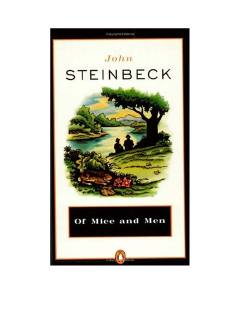

OMIkki yolg'iz ishchining fojiali orzulari va do'stligi haqidagi ta'sirli qissa.
Buyuk tushkunlik davridagi Amerikada ish izlab yurgan ikki do'st — aqlli Jorj va sodda Lennining fojiali taqdiri haqidagi asar. Ular o'zlarining kichik fermasiga ega bo'lishni orzu qilishadi, ammo Lennining fe'l-atvori tufayli kutilmagan qiyinchiliklarga duch kelishadi.